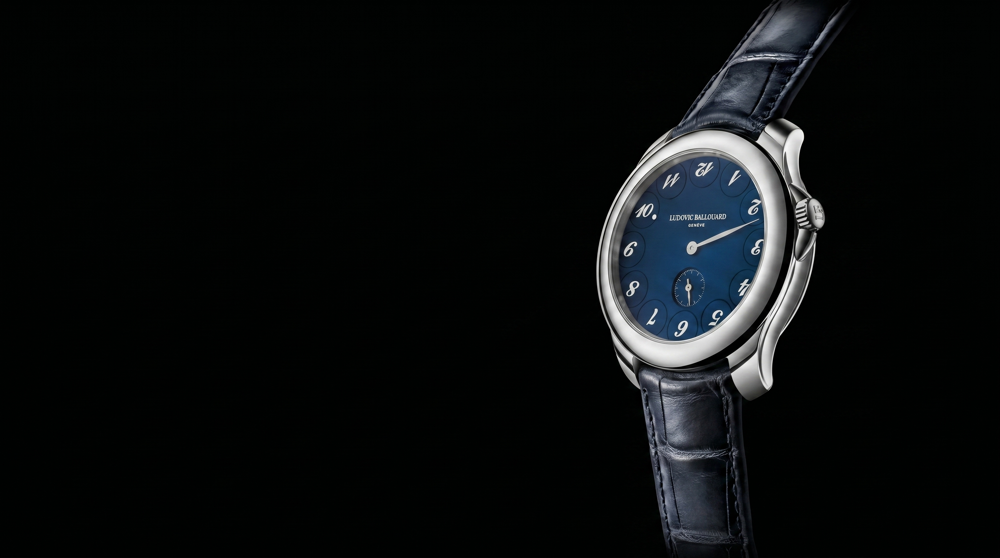
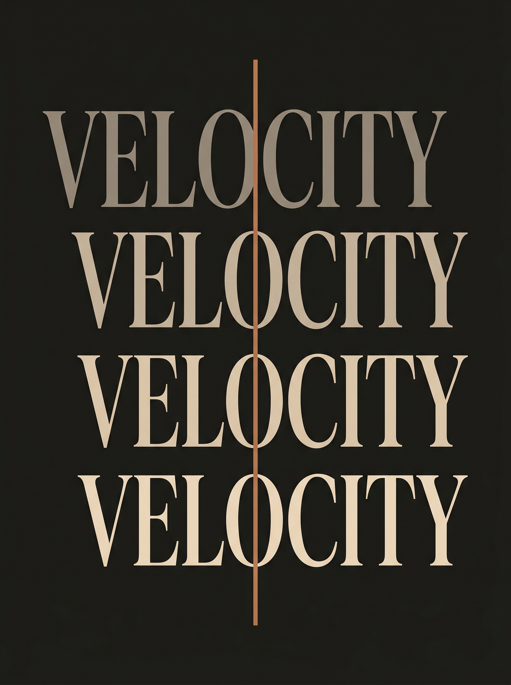
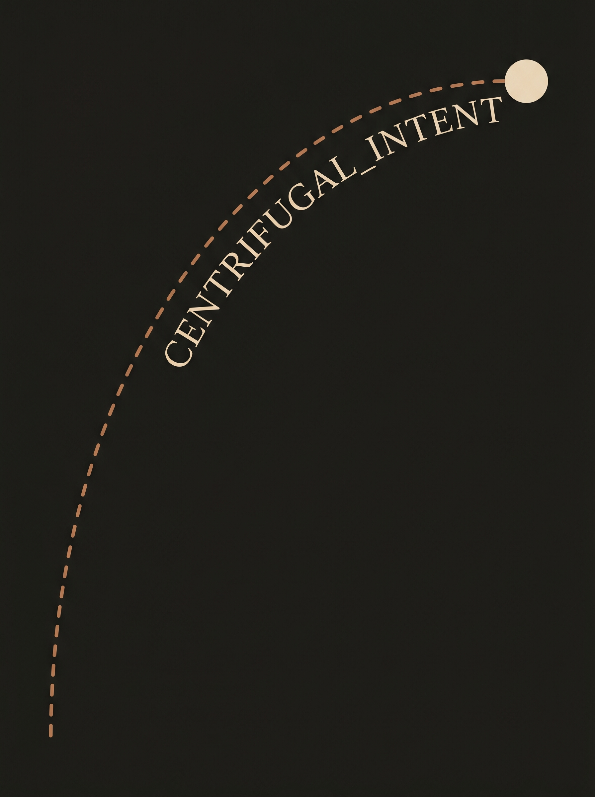
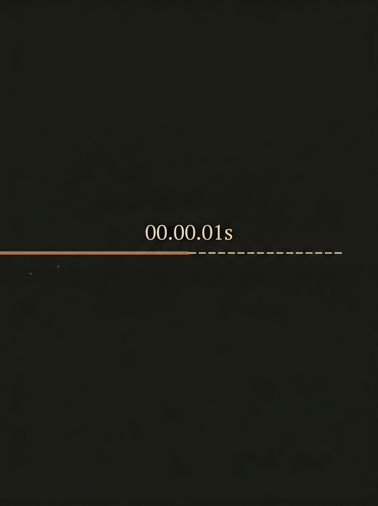

Time is an illusion.
Ludovic Ballouard makes reality.
Discard the lie of past and future. Embrace the only truth. Our timepieces reveal the present... the fleeting, terrifying, beautiful now.
Obsessive detail. Hand-engraved in Geneva. We do not build watches; we forge philosophies that disrupt perception.




Born from a dream to elevate time. Since 2009, Ludovic Ballouard has challenged every convention, crafting mechanical marvels that defy perception. Our history is written in unexpected movements.